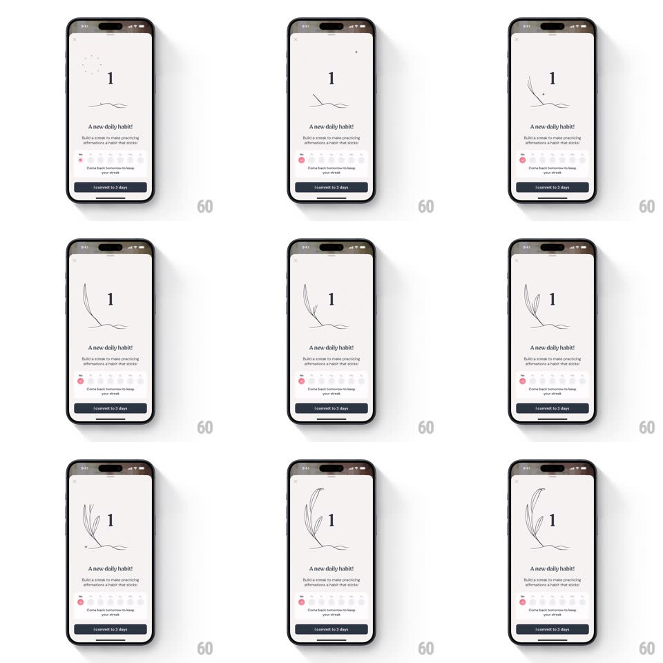

Media
Frame-by-frame

Rebuild this animation 1:1: I am's daily habit sheet - a white sheet slides up over the affirmation card, a botanical branch draws itself beside a giant "1", the first calendar day checks in pink, and the "I commit to 3 days" button anchors the bottom.

Rebuild this animation 1:1: I am's daily habit sheet - a white sheet slides up over the affirmation card, a botanical branch draws itself beside a giant "1", the first calendar day checks in pink, and the "I commit to 3 days" button anchors the bottom. ## Integration Integration: stack-agnostic spec - springs given as stiffness/damping, timed motions as duration + curve; map every value to your framework and animation library of choice. ## Scene Over the dimmed affirmation card, a white rounded sheet: close X, a giant serif "1", a hand-drawn botanical branch illustration, "A new daily habit!", supporting copy about streaks, a 7-day calendar row (first day pink-checked, rest grey), "Come back tomorrow to keep your streak", and a dark "I commit to 3 days" pill. ## Motion spec Pattern: sheet present with draw-on detail, ~1.5s. - Sheet: slides up (400ms, ease-out) with a slight overshoot (spring ~300/22), scrim fading to 50% behind (300ms). - Number: the "1" fades in (250ms), then the branch draws stroke by stroke beside it (1s, ease-in-out). - Calendar: the week row fades in (250ms), then the first day pops its pink check (scale 0.6 -> 1.15 -> 1, spring ~420/20). - Button: the commit pill slides up (250ms, +150ms). ## Calibration - The branch draw is the centerpiece - slow enough to watch, ~1s. - The pink check lands after the calendar row is fully visible. ## Reduced motion Sheet fades up (250ms); branch appears drawn; check appears filled. ## Don't miss - The giant "1" is a thin serif, oversized relative to the copy. - The sheet keeps the affirmation card peeking behind the scrim - it's a sheet, not a new screen.